O problema
Ausência centralizada de informações sobre os cadáveres.
Hoje o registro é feito em paralelo por vários setores e em suportes diferentes. O CIOP recebe o acionamento, abre o protocolo no Atena e repassa a ocorrência ao técnico, que se desloca sem registrar os marcos de saída da base, chegada ao local, saída do local e retorno ao IML, porque esse aviso é informal e frequentemente esquecido. No local, o técnico preenche o registro de ocorrência em papel, recolhe a requisição pericial de necropsia emitida pela autoridade policial e, quando existe, o documento da vítima. Na chegada ao IML, preenche o livro de registro de necropsia, o livro de câmara fria, o livro de PAF e o controle de tornozeleira, com dados que se repetem em cada um deles, e entrega ao gestor. A necropsia e os lacres das amostras biológicas são lançados no Atena, mas não há forma de registrar a entrega dessas amostras pelo sistema. A identificação é buscada de forma manual: quando um familiar ou uma autoridade policial procura uma pessoa desaparecida, o plantonista consulta os registros um a um. Os corpos não identificados e os identificados não reclamados ficam sem controle centralizado, e a situação de cada corpo depende de quem está de plantão, o que se perde na passagem de plantão. Como consequência, a família e a autoridade policial muitas vezes só sabem da identificação dias depois, enquanto a busca por uma vítima já identificada continua.
O impacto de hoje é retrabalho para o técnico, que repete o mesmo registro em quatro livros diferentes e ainda avisa os marcos de deslocamento de forma verbal; custódia sem rastro, com lacres e autos de entrega fora do sistema; corpos não identificados e não reclamados sem controle centralizado, com informação que se perde na passagem de plantão; espera maior para a família; e aviso tardio à autoridade policial, que segue buscando uma vítima já identificada. Nada disso é medido hoje.
AS-IS · o processo antes do MVP
O caminho real, com quem faz, o que entra, onde espera e o que é automatizável. Fonte: tabela AS-IS do projeto.

Fluxograma AS-IS · amarelo: etapa manual; tracejado: ponto de espera. Os números correspondem à tabela. Fonte Mermaid.
| Etapa | Quem faz | Entra | Ação | Sai | Sistema | Regra | Onde espera | Tempo | Automatizável |
|---|---|---|---|---|---|---|---|---|---|
| 1. Acionamento | CIOP | Chamado da autoridade | Abre o protocolo no Atena e repassa ao técnico | Protocolo e ocorrência | Atena | — | Fila do CIOP | — | Sim, com apoio humano |
| 2. Deslocamento | Técnico de necropsia | Ocorrência | Sai da base sem registrar os marcos | Técnico no local | Aviso verbal | Aviso informal | Saída da base | — | Não |
| 3. Local | Técnico de necropsia | Local e requisição | Preenche o registro em papel e recolhe a requisição | Registro em papel | Papel | — | No local | — | Não |
| 4. Chegada ao IML | Técnico de necropsia | Corpo e documentos | Preenche o livro de necropsia, câmara fria, PAF e tornozeleira | Quatro livros preenchidos | Papel | Dados repetidos | Recepção | — | Não |
| 5. Necropsia | Perito e técnico | Corpo | Realiza a necropsia e lacra as amostras | Laudo e lacres | Atena | — | Sala de necropsia | — | Pouco |
| 6. Identificação | Plantonista | Consulta de familiar ou autoridade | Procura manualmente nos registros | Identificação registrada | Papel e Atena | — | Um a um | dias | Não |
| 7. Guarda | Plantonista | Corpo não identificado | Mantém na câmara fria sem controle central | Corpo guardado | Planilha | — | Câmara fria | — | Não |
| 8. Liberação | Gestor e plantonista | Autorização | Entrega o corpo e assina o auto em papel | Corpo liberado | Papel | Identificação e auto | Aguardando retirada | — | Não |
TO-BE · o processo com o MVP
O que muda em cada etapa, quem passa a fazer e o ganho esperado. Fonte: tabela TO-BE do projeto.

Fluxograma TO-BE · verde: máquina (automação local); azul: pessoa (fé pública). Fonte Mermaid.
Informações centralizadas e sem retrabalho.
- Acionamento e marcos
Os quatro marcos passam a ser registrados no app
A pessoa assistida pela máquinaRastreabilidade do deslocamento - Registro único
Um cadastro por corpo, sem repetir em quatro livros
A máquina (automação)Menos retrabalho - Lacres
A entrega das amostras passa a ter registro
A pessoa assistida pela máquinaCustódia com rastro - Identificação e busca
Consulta por protocolo, nome ou documento
A máquina (automação)Resposta no mesmo dia - Painel
Situação de todos os corpos visível na passagem de plantão
A máquina (automação)Nada se perde entre plantões
| Etapa | O que muda | Quem faz | Benefício | Esforço |
|---|---|---|---|---|
| Acionamento e marcos | Os quatro marcos passam a ser registrados no app | A pessoa assistida pela máquina | Rastreabilidade do deslocamento | Baixo |
| Registro único | Um cadastro por corpo, sem repetir em quatro livros | A máquina (automação) | Menos retrabalho | Médio |
| Lacres | A entrega das amostras passa a ter registro | A pessoa assistida pela máquina | Custódia com rastro | Baixo |
| Identificação e busca | Consulta por protocolo, nome ou documento | A máquina (automação) | Resposta no mesmo dia | Médio |
| Painel | Situação de todos os corpos visível na passagem de plantão | A máquina (automação) | Nada se perde entre plantões | Baixo |
O que o MVP entrega
Tela-assinatura: Painel de dez indicadores e ficha do caso com as sete etapas, aberta na gaveta lateral.
Menu do MVP: PainelCorposNovo acionamentoBuscaConfiguraçãoResumo
Regras de negócio
| ID | Regra | Quando | Tipo | Exceção |
|---|---|---|---|---|
RN01 | O número da necropsia é único e gerado no acionamento | No cadastro | Validação | Nenhuma |
RN02 | A liberação à família exige corpo identificado, assinatura do familiar e documento | Na etapa 6 | Negócio | Corpo não identificado |
RN03 | Todo marco, lacre, campo alterado e consulta ao caso registra perfil, data e hora | Em toda ação | Validação | Nenhuma |
RN04 | A busca aceita protocolo, número da necropsia, nome, documento, delegacia ou lacre | Na busca | Negócio | Caso sem nome |
RN05 | A lista e o painel não mostram o nome completo, só as iniciais | No painel e na lista | LGPD | Ficha do caso |
RN09 | O sepultamento pelo Estado é decisão do Gestor ADM, com justificativa de no mínimo 20 caracteres, autorização e Auto de Entrega da funerária | Na etapa 5 ou 6 | Negócio | Nenhuma |
RN10 | A custódia só se encerra com o destino do corpo, o laudo recebido pela ADM e todos os lacres recebidos | No recebimento do laudo | Validação | Nenhuma |
RN11 | Os métodos de identificação só se esgotam depois de pelo menos um exame complementar (DNA, odontologia legal ou antropologia forense) | Na etapa 5 | Validação | Nenhuma |
RN12 | Depois do encerramento ou do sepultamento o caso não se edita: a correção entra como retificação, com tipo, o que muda e motivo | Depois do encerramento | Negócio | Nenhuma |
Papéis
| Papel | Quem é | O que vê | O que faz | O que não faz | Registro |
|---|---|---|---|---|---|
| Operador do CIOP | Servidor que recebe o acionamento | Chamado, protocolo e ocorrência | Abre o protocolo e registra o acionamento | Decidir a identificação | Protocolo e acionamento |
| Técnico de necropsia | Técnico que vai ao local | Local, requisição e corpo | Registra os quatro marcos e recolhe a requisição | Liberar o corpo | Marcos e requisição |
| Plantonista | Servidor do plantão do IML | Situação, identificação e guarda | Registra identificação, não reclamado e liberação | Alterar laudo | Situação e auto de entrega |
| Gestor | Chefia da coordenadoria | Painel, prazos e auditoria | Acompanha prazos e passagem de plantão | Suprimir registros | Trilha de auditoria |
Métricas do piloto
Como testar
O MVP é um `index.html` offline, com dados fictícios. Abra index.html.
cd Apps/trilha-custodia-necropsia python construir.py python testes/testar.py python testes/cenarios.py python testes/jornada.py # Lightpanda (via WSL, CDP em 9222 e HTTP em 8000) python testes/jornada.py --cdp http://127.0.0.1:9222 --base http://127.0.0.1:8000
Documentos: PROJETO.md · sprint.md · README.md